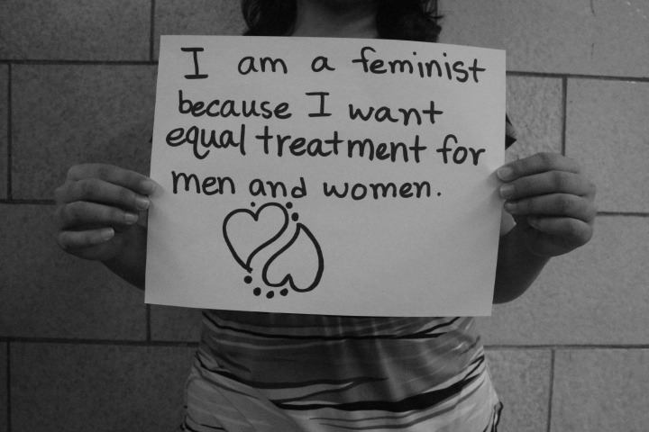
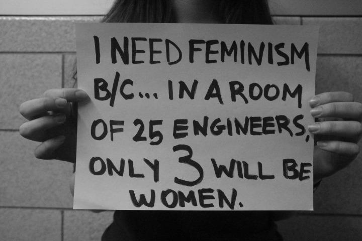
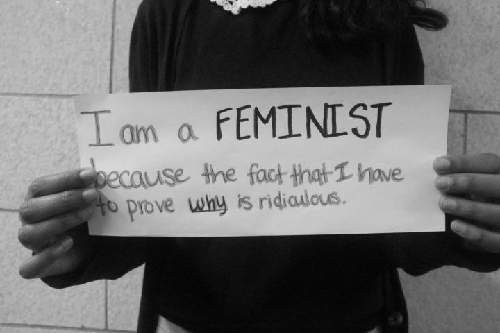
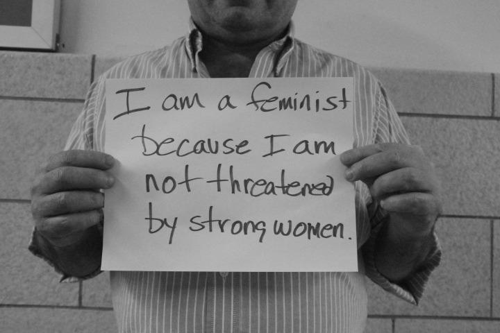
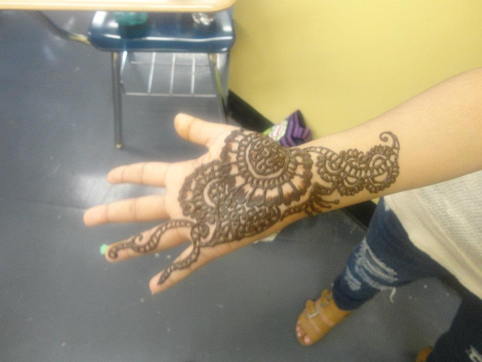
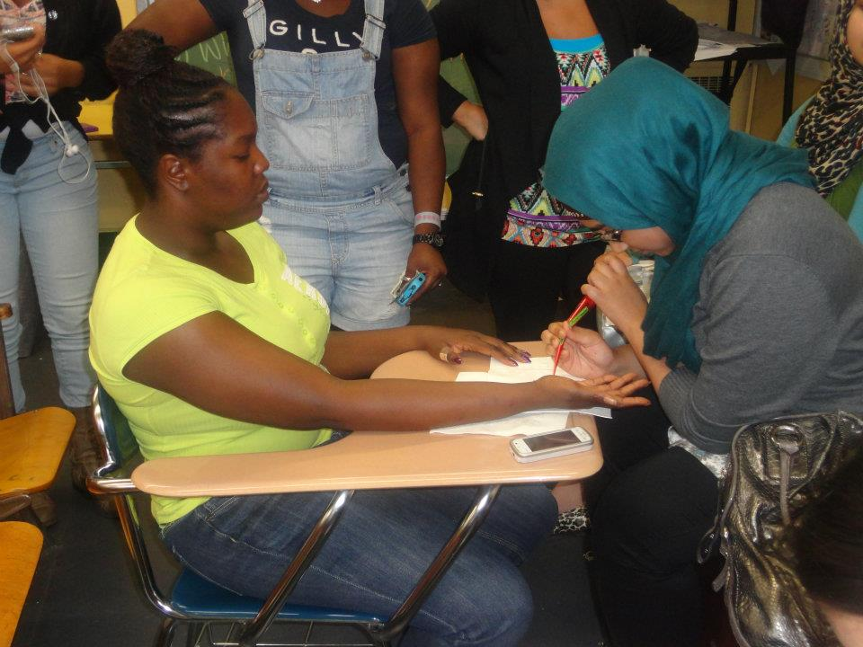
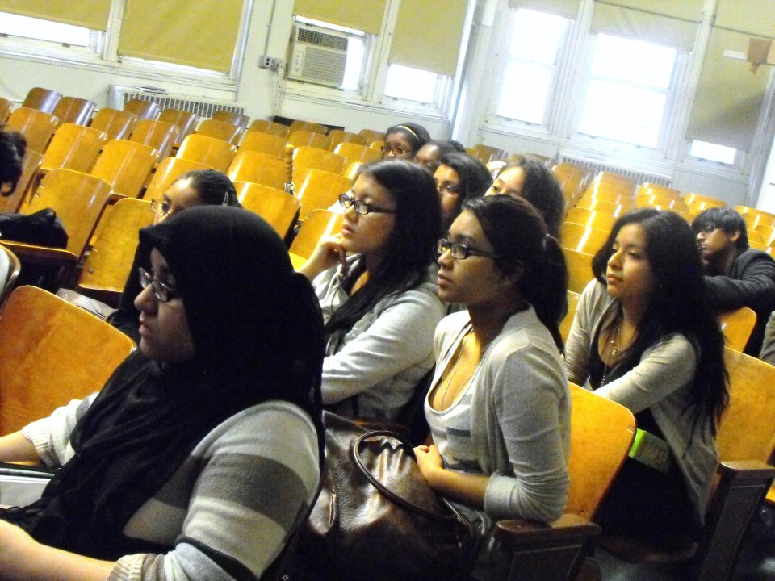
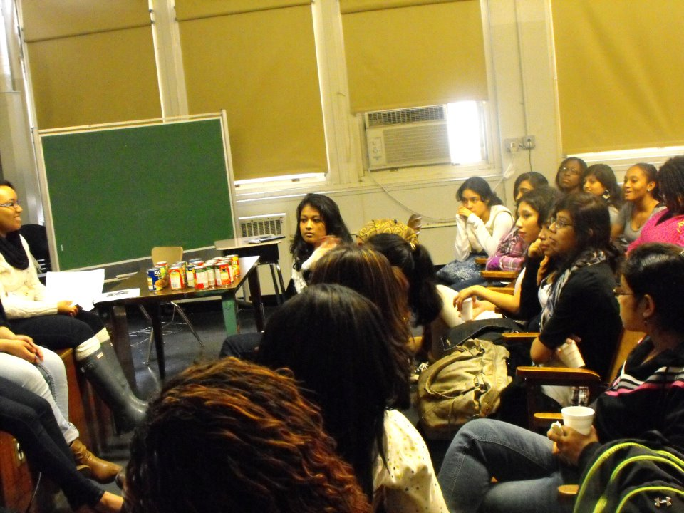

About Us
SAAW is the Student Association for the Advancement of Women.
Our nonprofit organization was created by public high school students in NYC and is currently maintained by undergraduates at Barnard and Yale.
We aim to increase awareness of feminism and to promote women's leadership by supporting the growth of women's leadership clubs in high schools across NYC and by running a successful virtual mentorship program to support underserved students of color, particularly women, in applying and gaining admission to competitive colleges.
The goals of our organization are to strive towards gender equality and women’s empowerment on a global level by encouraging high school students to actively enact change on a local level.
History
SAAW is a nonprofit organization created by students at Brooklyn Technical High School in 2011 and currently maintained by undergraduates at Barnard and Yale.
The founders of SAAW initially volunteered, fundraised and educated with other interested high school students in public schools across New York City. Together, we volunteered, educate, and fundraised in order to promote women's rights, education and leadership potential.
Four years later, SAAW is maintained by 2 of its original founders and sisters Chayma and Anfal Boussayoud.
Programs
Our two main programs are our virtual college mentorship program and our network of affiliated chapters and clubs in public high schools across New York City.
Our virtual mentorship program connects socially minded NYC high school students to underserved and high-achieving undergraduates particularly low-income women of color. Mentors are committed to sharing their knowledge and expertise with these students to assist in the college application process and to creating empowered students who think critically about the world and are ready to tackle the big issues.
We also support the establishment of clubs in public high schools in New York City that are dedicated to women's leadership and feminism. These chapters are recruitment sites for our virtual mentorship program.
SAAW believes that by creating a support network for deserving NYC high school students who believe in our mission, we can change the world.
Chapters
We are looking for students in schools through New York City, the U.S. and the world who are interested in establishing women's leadership and feminist clubs in their schools. Currently, we have two active chapters in New York City:
The co-presidents of this feminist and social-justice centered club are Esther Tsvayg and Tajrean Yeana. YWL is also a site of recruitment for SAAW's mentorship program. The Brooklyn Tech YWL chapter is dedicated to raising awareness of women’s issues and cultivating a culture of responsibility within Brooklyn Tech. This year we have been able to inch towards our aforementioned goals by holding workshops and conversations about women and Islam, women in STEM, and men’s roles within the feminist movement. Some of the most notable events of the year included the “I need feminism because ______” campaign where the YWL chapter gathered together and wrote about why feminism is necessary, and was able to successfully compile an intersectional collage about gender issues across the experiential spectrum, eventually putting our art on a billboard on the sixth floor. In connection with the Brooklyn Tech YWL chapter, our Vice President, Mary Karroqe, directed a “she++” event, a conversation about women’s accomplishments in STEM, focusing particularly on how to get young girls more involved with technology, as well as hosting a “Tech Talk” about women in STEM. This upcoming year, YWL intends to start a magazine about 21st century women and the troubles that women all across the world, of all walks of life, face.
Connect with them here and follow their facebook page.
The SAAW chapter at the High School for Health Professions and Human Services (HPHS) is named the Women's Leadership Club. It has been active since 2011. The club educates the public about social issues concerning women and fundraises for nonprofits such as SHARE in Africa. Past events they have hosted in HPHS include a henna fundraiser, food drive and discussions.
Join their facebook group.